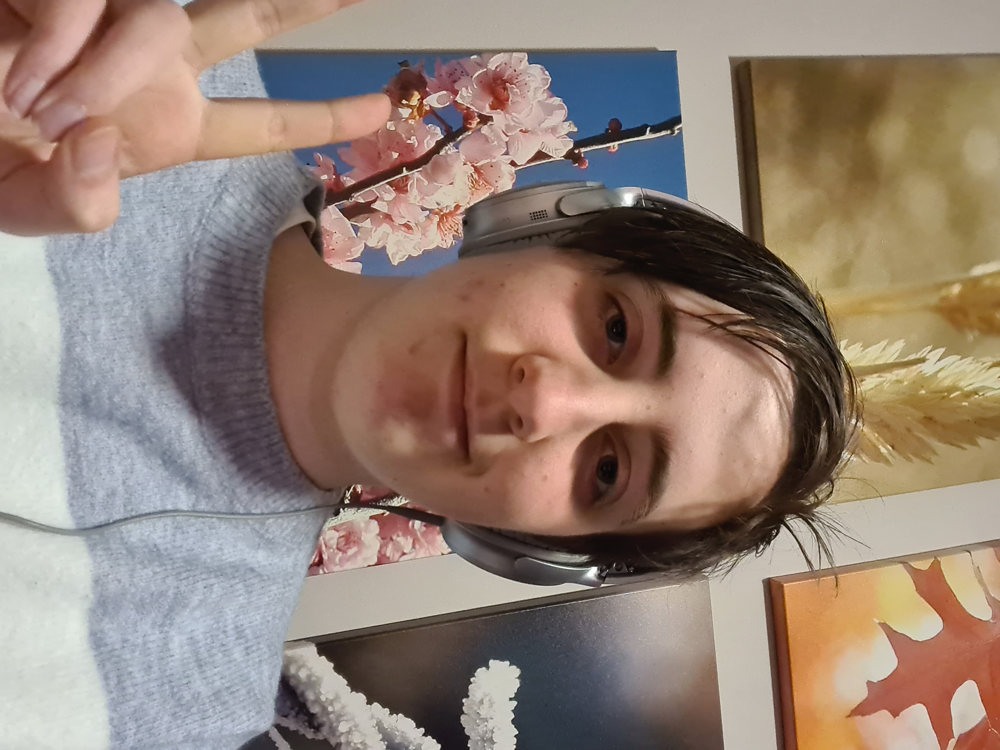

~ About Me ~
Hello there! I'm Bethany (or 'B' as I am more commonly known as).
Sorry for the bad picture, I've never been the most photogenic of people.
To get to know me a bit, I'll give a quick run down:
I like drawing and listening to/playing music. I’m a big fan of Star Wars and 90s music. One of my favourite things to do is create characters and insert them into stories (either already existing or created by me). My favourite video games are ‘Detroit: Become Human’ and ‘Bendy and the Ink Machine’. My favourite animation is the short film ‘Best Friend’ by Gobelins. I LOVE Joey Drew Studios. My favourite song is '1979' by the Smashing Pumpkins and my top three shows are #1: The Sandman (Neil Gaiman), #2: Our Flag Means Death (Taika Waititi) and #3: Good Omens (Neil Gaiman).
I’ve always enjoyed video games and have wanted to be involved in the industry for a long time. So I’d been choosing school subjects that cater towards the career I want and trying to improve my skills in order to achieve my dreams. I have done both years of VET Digital Media as well as VCE Media, achieving high scores in both subjects. I’ve worked on 3D models, Character design, Web Design and Animation. I hope to pursue a career in concept art and design or screenwriting.